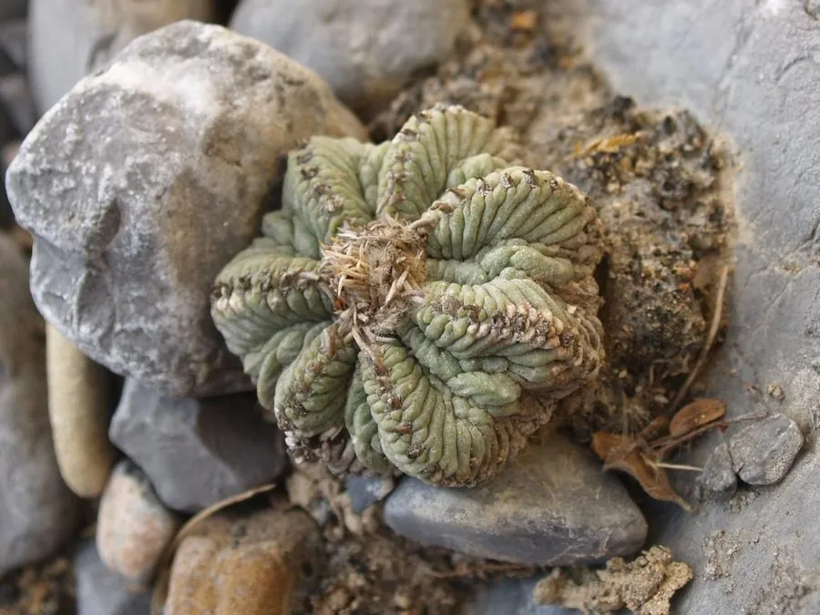

多肉植物 · 植物界
花笼 Aztekium ritteri

仙人掌科花笼属多年生肉质植物，球体极小、棱脊皱褶如迷宫，生长极慢，是墨西哥特有的珍稀仙人掌，CITES 附录Ⅰ物种。
- 分类
- 门被子植物门纲木兰纲目石竹目科仙人掌科属花笼属
- 栖息环境
- 原产墨西哥新莱昂州石灰岩峭壁缝隙，喜光耐旱
- 地理分布
- 原产墨西哥新莱昂州，分布区极狭窄
- 保护级别
- CITES 附录Ⅰ；IUCN 暂无评估；野外种群极小
物种志
花笼为仙人掌科花笼属多年生肉质植物，球体极小，扁球形，高约三至五厘米，直径约五厘米，灰绿色。棱九至十一条，棱脊上有横向皱褶，使球体表面呈迷宫状纹理；刺座小，刺细短、易脱落。花生于球体顶部，花小，白色至淡粉色，花期夏季；浆果小，成熟时红色，种子极细。
花笼原产墨西哥新莱昂州，仅生长在石灰岩峭壁的缝隙中，是花笼属的模式种。它喜光、耐旱，夏季高温时需适度遮阴；适宜疏松透气、排水良好的石灰质颗粒基质，忌积水和闷热。球体皱褶如迷宫、生长极慢，一年仅长几毫米，是仙人掌中最受追捧的珍稀种类之一；因野外种群极小、采集压力大，被列入 CITES 附录Ⅰ。繁殖以播种和嫁接为主。
形态与习性
- 株型扁球形，极小
- 球径直径约 5 cm，高 3–5 cm
- 花期夏季，花小、白色
- 光照喜光，夏季适度遮阴
- 水分耐旱，忌积水
- 土壤石灰质颗粒基质
- 主要用途珍稀仙人掌收藏与栽培
趣味知识
- 花笼的棱脊上有横向皱褶，整个球体像一座微缩的迷宫。
- 它一年只能长几毫米，一个拳头大的植株往往已有上百年。
- 花笼仅分布于墨西哥新莱昂州的几处石灰岩峭壁，野外数量极少。